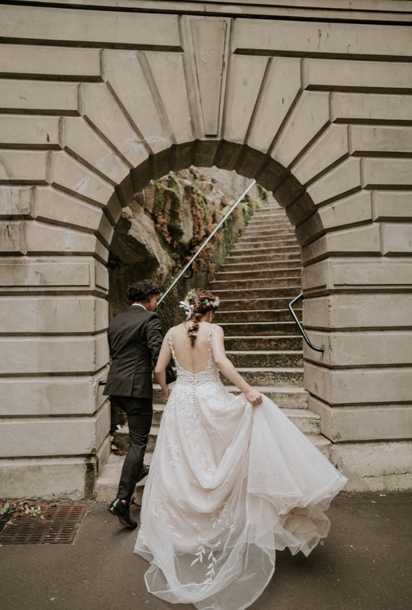
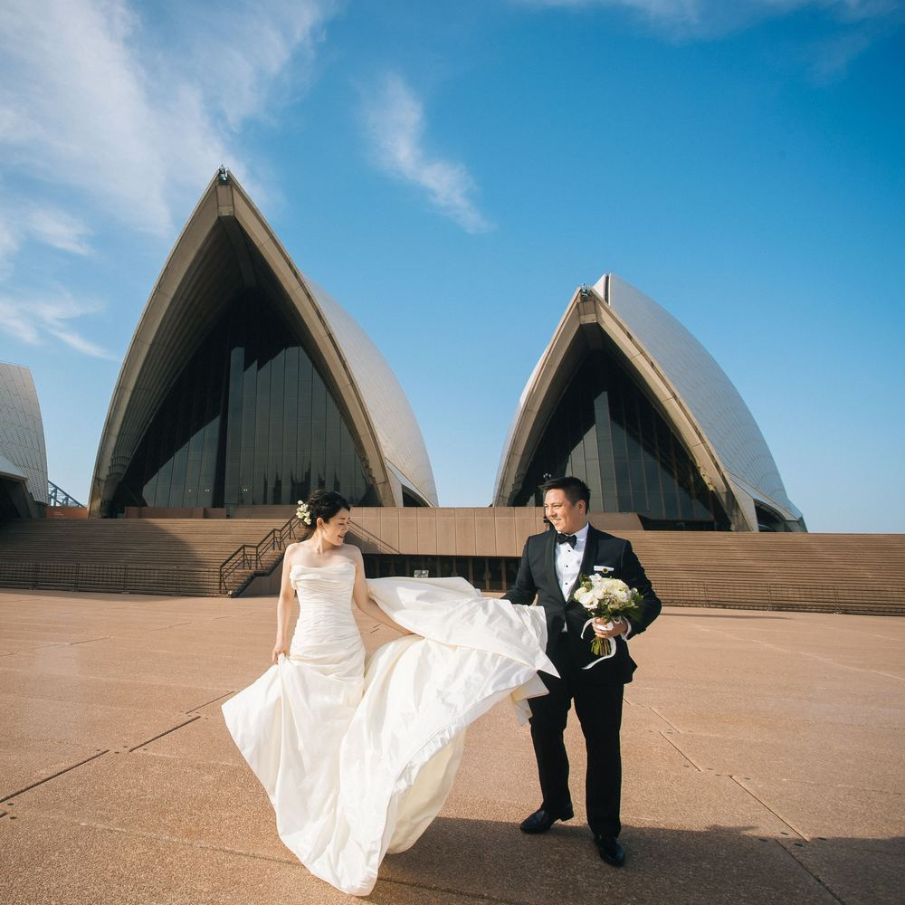
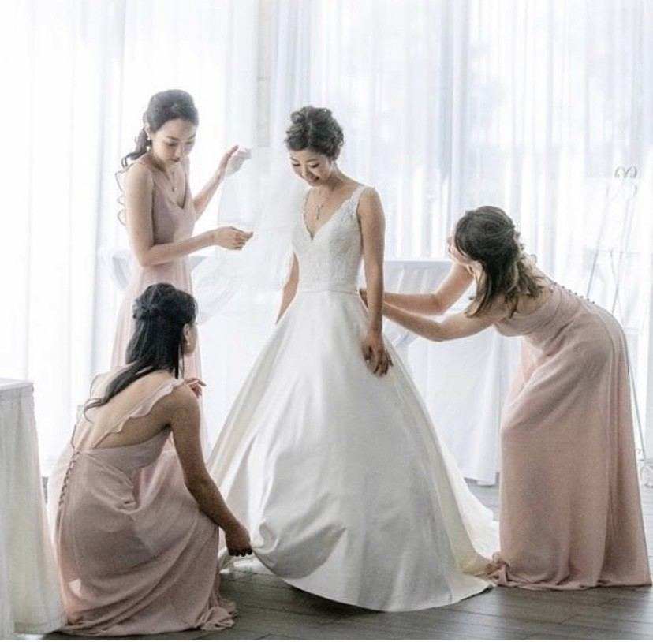
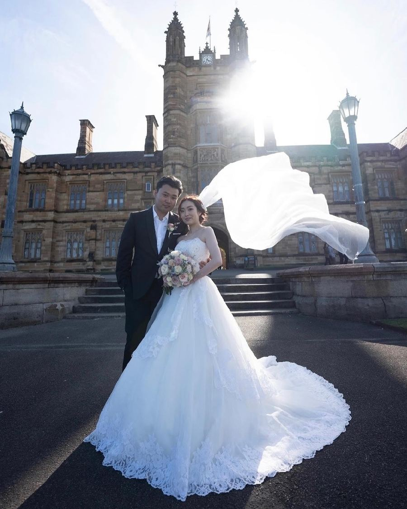
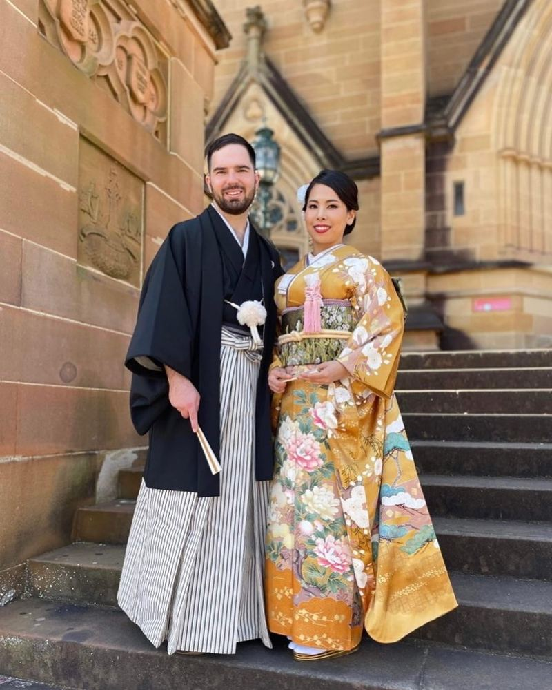
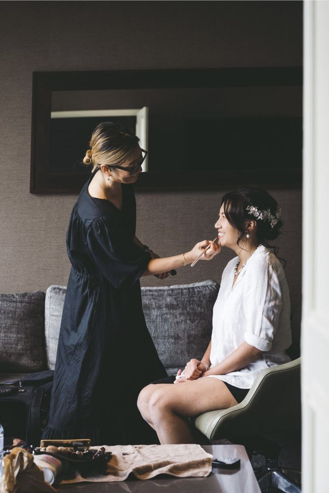

Wedding hair & make-up artist · Sydney
A calm wedding morning, and a look that is still you.
Natural, timeless bridal hair and make-up by Emiko, originally from Tokyo, with over two decades of experience. She comes to your home, hotel or venue across Sydney.
Replies within 24 hours.
The collections
Build your wedding day.
No minimum bridal party booking is required. Your wedding day, exclusively you.
1Choose a collection
2Anyone getting ready with you?
All make-up services include complimentary eyebrow shaping, and false eyelashes if required. Hair accessories, headpieces and hair extensions are available for hire for an extra fee. Where parking fees apply at the hotel or venue, these are payable by the client.





Wedding Mum / Aunty Companion
When you wish Mum could be there.
Perhaps she lives overseas, or is unable to travel. Whatever your story, you don’t have to feel alone. This isn’t about pretending to be your mum. It’s about having someone experienced, calm and caring beside you.
Special events
Not only weddings.
Personal make-up lesson
Learn the make-up that suits your face.
One-on-one, using your own make-up kit. Everyday quick make-up, evening make-up, Korean and Japanese styles, and over-50 make-up.
from $30090 minutes

About Em
“Hello, my name is Emiko. Originally from Tokyo.”
My career has taken me across editorial, advertising shoots, television commercials, red carpet events and hundreds of weddings throughout Australia and internationally. I am punctual and reliable, and I help you feel calm under pressure, so your wedding morning runs smoothly. I create healthy, hydrated, glowing skin rather than masking it.
Mobile service across Sydney: CBD, Northern Beaches, North West, Eastern and Western Suburbs, and beyond. Based on the Lower North Shore.
Booking enquiry
Get in touch with Em.
Tell her your date, the suburb, and which service you are interested in. She replies within 24 hours.